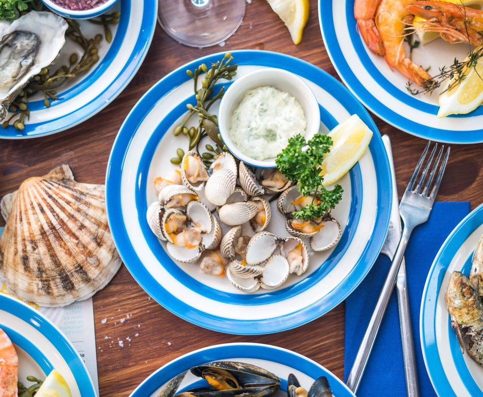

Day 1
First stop check in to our hotel
Booking Details
And since I know how you absolutely love seafood, we will have brunch at the lovely Scallop Shell. Menu is available here.

Remember how you requested for a chill birthday celebration? What could be more chill than a soak and spa at the very famous Thermae Bath Spa. I booked us a lovely couple's massage to ease away your stress.
Bath is called "Bath" for a reason. The Romans used to go to Bath for spa. The waters are still a big draw, both at the ancient Roman Baths and the thoroughly modern Thermae Bath Spa, which houses the only natural thermal hot springs in Britain you can bathe in.
To cap off the birthday, how about a lovely dinner at the very ATAS place at the Dower House at the Royal Crescent at 7pm. The Royal Crescent is a row of 30 terraced houses laid out in a sweeping crescent in the city of Bath, England. Designed by the architect John Wood, the Younger and built between 1767 and 1774, it is among the greatest examples of Georgian architecture to be found in the United Kingdom


Dress for the occassion. No jeans.
If you are not tired yet, how about a night cap? Everything about the place, from the decor to drinks, is sourced from West Country producers, materials and workmen. Cocktails change seasonally, with notables including Orange Grove (Beefeater gin, clementine liqueur, apricot, fresh lemon, Wild Beer ‘Pogo’, lemon tonic), and Ten Cent Pistol (Wild Turkey Bourbon, banana, lapsang-infused honey, fresh lemon, bitters), both at £8.50. Add to this a super-cool soundtrack and it’s clear why Dark Horse was listed among the best new UK bars of 2016.

Goodnight. More to come tomorrow.